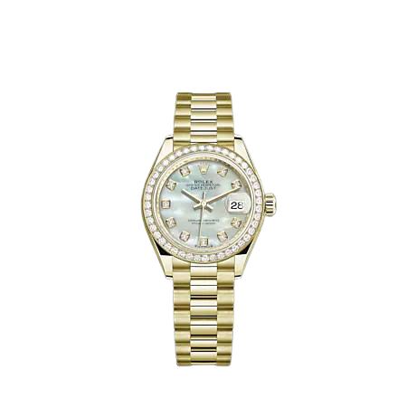
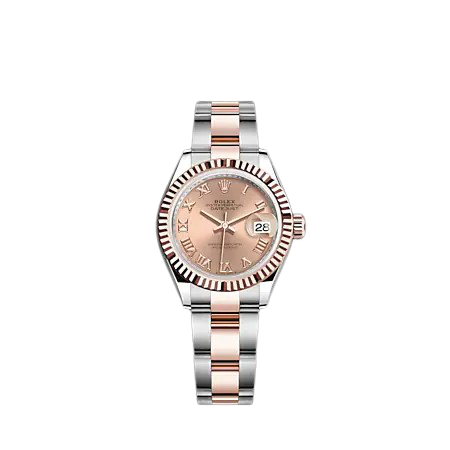

LADY-DATEJUST
오이스터, 40mm, 오이스터스틸과 에버로즈 골드

LADY-DATEJUST
오이스터, 28mm, 옐로우 골드와 다이아몬드
LADY-DATEJUST
오이스터, 28mm, 오이스터스틸과 에버로즈 골드
|
 LADY-DATEJUST 오이스터, 40mm, 오이스터스틸과 에버로즈 골드 |
LADY-DATEJUST 오이스터, 28mm, 옐로우 골드와 다이아몬드 |
 LADY-DATEJUST 오이스터, 28mm, 오이스터스틸과 에버로즈 골드 |
| 레이디-데이트저스트(Lady-Datejust)는 각자의 개성에 따라 스타일을 선택할 수 있도록 다양한 모델을 선보입니다. 오이스터스틸(Oystersteel), 18캐럿 옐로우 골드나 에버로즈(Everose) 골드, 또는 오이스터스틸과 18캐럿 골드가 조화를 이룬 롤레조(Rolesor) 버전으로 만나볼 수 있습니다 |
| 플루티드, 돔드 또는 다이아몬드가 세팅된 베젤 고급스러운 다이아몬드로 파베 세팅되어 은은하게 빛나는 다이얼 또는 매혹적인 빛깔의 진주자개 다이얼. 심플하거나 보석이 세팅된 시각 표식 또는 로마 숫자. 다양한 매력을 간직한 레이디-데이트저스트는 오이스터 퍼페츄얼(Oyster Perpetual) 컬렉션에서 가장 폭넓은 모델을 갖추고 있습니다. |